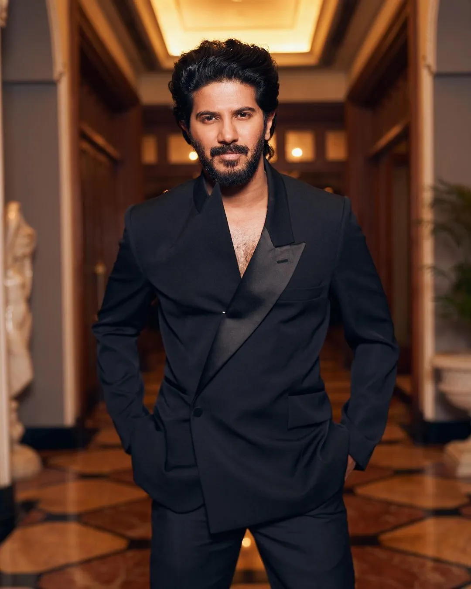
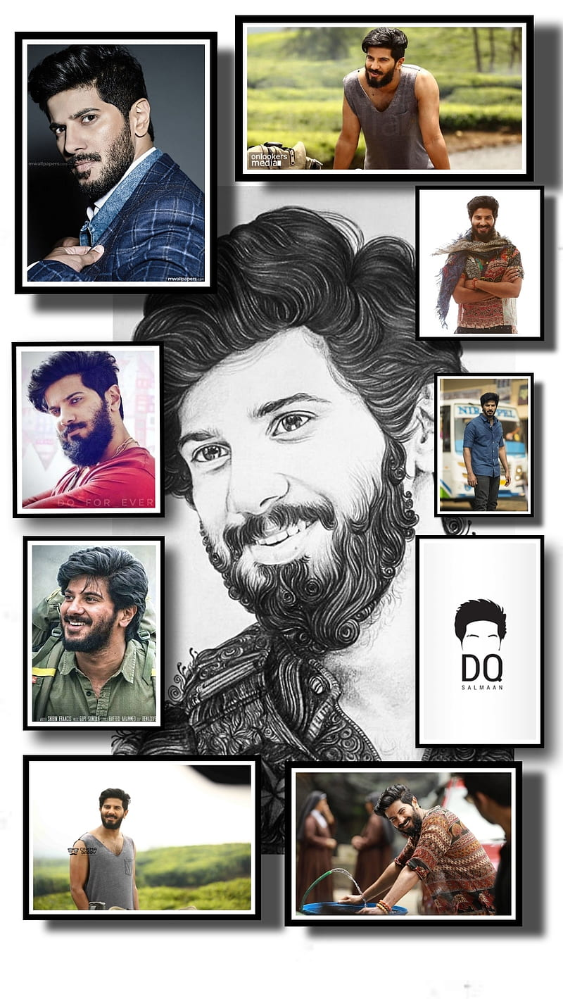

BIOGRAPHY
Dulquer Salmaan; born 28 July 1983/1986) is an Indian actor, playback singer and film producer who predominantly works in Malayalam cinema in addition to Tamil, Telugu and Hindi films. He graduated with a bachelor's degree in business management from Purdue University and worked as a business manager in Dubai before pursuing a career in acting. Dulquer is a recipient of several awards including, four Filmfare Awards South and a Kerala State Film Award.
After a three-month acting course at the Barry John Acting Studio, Salmaan made his acting debut with Second Show (2012). He has since established himself as a leading actor in Indian cinema with several critically and commercially successful films including Ustad Hotel (2012), ABCD (2013), Neelakasham Pachakadal Chuvanna Bhoomi (2013), Vaayai Moodi Pesavum (2014), Bangalore Days (2014), Vikramadithyan (2014), O Kadhal Kanmani (2015), Charlie (2015), Kali (2016), Kammatti Paadam (2016), Jomonte Suvisheshangal (2017), Mahanati (2018), Kurup (2021) and Sita Ramam (2022).[6][7][8][9][10]
He has been recognised in the media as a fashion icon and an auto enthusiast.He owns several entrepreneurship ventures and promotes various social causes. He is also the founder of the film production company Wayfarer Films
ACTING CARRER
n 2011, Salmaan signed on for debutante Srinath Rajendran's crime film Second Show (2012) in which he played the role of Harilal, a gangster. When asked in an interview about his "unconventional entry with a bunch of newcomers", Salmaan stated that it was his conscious decision as he felt that " ... when an actor debuts, he has to earn the right to be a hero and not get it through a shortcut route."[23] The film was a commercial success.[24][25]
Salmaan next starred in Anwar Rasheed's Ustad Hotel (2012). The film, which received the National Film Award for Best Popular Film Providing Wholesome Entertainment, was also a major commercial success at the box office.[26] He also won widespread praise for his portrayal of Faizy, a budding chef.[27] For his performance, Salmaan won the Filmfare Award for Best Male Debut – Malayalam, in addition to his first nomination for the Filmfare Award for Best Actor – Malayalam.[28][29] His third film was Theevram, a crime thriller directed by Roopesh Peethambaran. The film, which released in November 2012, was a box office failure.[30]
In 2013, he signed on to appear in Martin Prakkat's comedy-drama ABCD: American-Born Confused Desi in which he made his singing debut with "Johnny Mone Johnny". Both the song and the film became popular.[31] Though the film received mixed reviews, his performance was well received by critics. Sify stated: "It is Dulquer Salmaan's show all the way and in all fairness the young actor has given his heart and soul into his character."[32] He was also part of Amal Neerad's segment Kullante Bharya in the anthology film 5 Sundarikal (2013).[33] Salmaan then collaborated with Sameer Thahir in Neelakasham Pachakadal Chuvanna Bhoomi (2013), a road film.[34][35] Salmaan starred in his "first love story", cinematographer Alagappan's romantic drama Pattam Pole (2013), which was a commercial failure.[31][36]

Debut in Tamil cinema and established actor (2014-2017)
In 2014, Salmaan took on another romantic role in Salalah Mobiles, with Nazriya Nazim opposite him; like Pattam Pole, Salalah Mobiles could not garner much success for the actor.[36] Salmaan's next appearance was in the Tamil-Malayalam bilingual Vaayai Moodi Pesavum (2014). While the Malayalam version Samsaaram Aarogyathinu Haanikaram was received poorly, the Tamil version received positive reviews and became a sleeper hit.[37][38] IANS said Salmaan is "a treat to watch" and added, "he earns extra brownie points for dubbing in his own voice and speaking flawless Tamil."[39] He won the Filmfare Award for Best Male Debut – Tamil for his performance in the film.[40] Salmaan felt that the film did not work in Malayalam due to the different sensibilities of the audience.[41]
In Anjali Menon's ensemble romantic comedy drama Bangalore Days (2014), Salmaan played Arjun with Nivin Pauly and Nazriya Nazim as his cousins. The film received positive reviews and emerged as one of the highest-grossing Malayalam films of all time, grossing around ₹500 million (US$6.0 million).[42] Later that year, he co-starred with Unni Mukundan in Lal Jose's Vikramadithyan.[37] He then starred in what he called his "most challenging film yet" in Renjith's period drama Njaan (2014).[43] His performance received favourable reviews and earned him several accolades, including his second Best Actor – Malayalam nomination at Filmfare.[44]